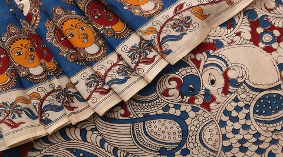
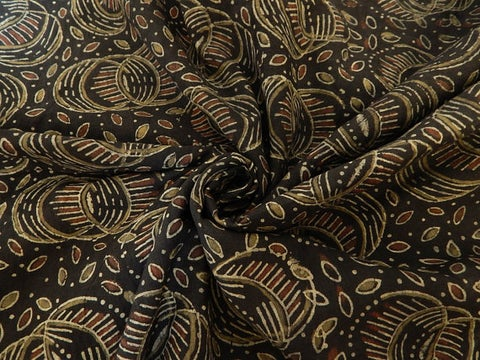

Kalamkari is a type of hand printed or hand block printed cotton textile. Kalamkari refers to the ancient style of hand painting that is done with a tamarind pen, using natural dyes. Literal meaning of Kalamkari is kalam, which means pen and kari which refers to craftsmanship; which is derived from a Persian word. Motifs drawn in this ancient art of Kalamkari, include flowers, peacock, paisleys and also divine characters from Ramayana and Mahabharata. Kalamakari was born out of an art of story-telling. In ancient times, people used to travel from village to village and told stories; some of them even drew it on a canvas.
This was how the art of Kalamkari was born. This art is primarily used to make Kalamkari sarees. During the Mughal era, this art of Kalamkari got its recognition. Kalamkari is a very detailed and complicated painting that results in beautiful and elegant designs. Kalamkari designs and colors are very vibrant and bright. After being world famous, the artisans modernized Kalamkari designs and came up with new ideas and themes. These artisans came up with innovative ideas highly influenced by Persian motifs, Hindu mythology and religious symbols; that gave an identification to Kalamkari designs. Kalamkari designs are drawn generally by free hand using a pen and further the filling is also completely done with hand. Kalamkari art is generally done using earthy colors like mustard, indigo, rust, green and black.
Natural dyes are used to paint colors in Kalamkari art that are extracted by blending jaggery, iron fillings and water; and it is used for outlining sketches. Alum is also used for making natural dyes for Kalamkari fabric and also for treating the fabric. Alum ensures stability of the color in Kalamkari fabric. This fabric has a characteristic shine because it is soaked in resin and cow milk. Different effects on the Kalamkari fabric are achieved by using cow dung, seeds, crushed flowers and different varieties of plants. After every single application of dye on Kalamkari fabric, it needs to be dyed for better results. Kalamkari art, in its recent applications is seen depicting Buddha and Buddhist art forms. In India, a lot of people are engaged in making handloom sarees; and Kalamkari sarees is one such handloom work that requires art, dedication and love for paintings. Kalamkari sarees are considered as a rich and elegant choice. MAKING OF KALAMKARI
Process of making Kalamkari fabric, involves 23 steps. This involves bleaching Kalamkari fabric, softening it, drying it in sun, preparing natural dyes, air drying and washing. The entire procedure is intricate and requires an eye for detailing. Generally, cotton fabric is used for making Kalamkari; however, silk fabric can also be used. Kalamkari fabric is first treated with a solution of cow dung and bleach. After keepi ng the fabric in this solution, it gets a uniform off-white color. To avoid smudging of dyes on the Kalamkari fabric, it is also dipped in a mix ture of buffalo milk and mylobalans. Kalamkari fabric is then washed twenty times and sun dried. After this, the fabric is ready for printing. K alamkari designs are then painted on the fabric, by hand. Kalamkari fabrics include minute details and it is painted using natural dyes.
There are two identifiable types of Kalamkari: Srikalahasti and Machilipatnam. In Machilipatnam style, Kalamkari designs are generally printe
d with hand carved blocks with intricate details, printed by hand. On the other hand, Srikalahasti style includes Kalamkari designs inspired fro
m Hindu mythology, that describe the scenes from the epics. Kalamkari designs also emerged, based on the states where it is created. Gujarat and And
hra Pradesh are two prime states where two different types of Kalamkari designs are practiced. Andhra Pradesh borrows its Kalamkari design inspirati
on from forts, palaces and temples, along with animal and bird motifs; while Gujarat borrows its Kalamkari design inspiration from mythological characters.
PRESENT DAY STATUS OF KALAMKARI
Initial representation of Kalamkari art was as religious paintings that depicted Indian Gods. Kalamkari started off during the Mughal dynasty and presently Andhra Pradesh is the largest producer of Kalamkari fabric. Kalamkari is an intricate art form and req uires a tedious technique in its making; because of which the art of Kalamkari was losing its shine. With the emergence of high qual ity machine looms and acceptance for printed textiles; Kalamkari art came on the verge of extinction. However, printed Kalamkari is a new craze among the current generation, as it is a combination of traditional and modern trends. Fashion industry came together to revi ve this art and helped artisans of Andhra Pradesh for practicing this art. Kalamkari sarees, kalamkari dresses and kalamkari blouses are a huge running trend. Several fashion designers beautifully portrayed kalamkari sarees on fashion runways and got a great response.
Kalamkari these days is not restricted to paintings and sarees only; many fashion attires also have kalamkari prints.
Modern outfits are made out of Kalamkari print fabrics and are accepted by people of all generations. Due to vibrant kalamkari
designs and the use of natural dyes, kalamkari is used as a symbol of region’s heritage. Also, many artists produce items of furnishings
and fabrics that are made out of Kalamkari prints. Beautiful kalamkari printed fabrics are also available at The Design Cart, in wholesale prices.